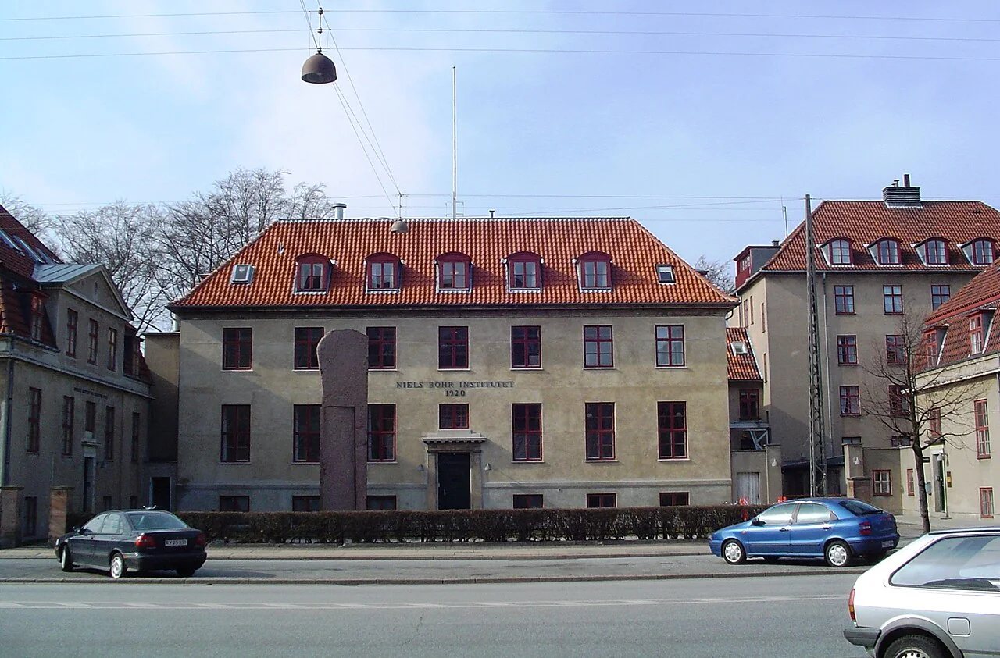
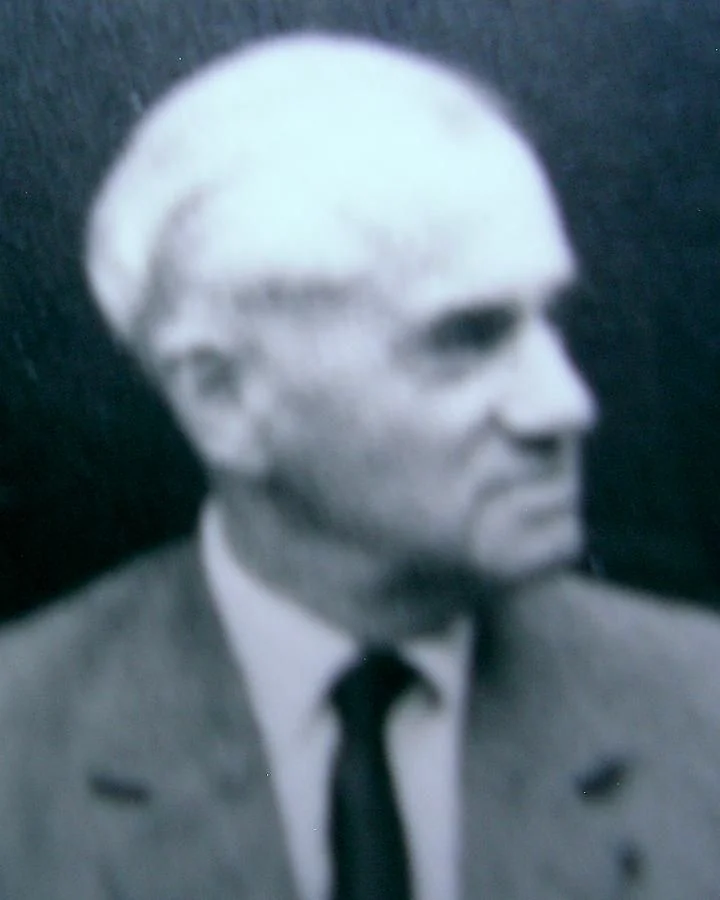
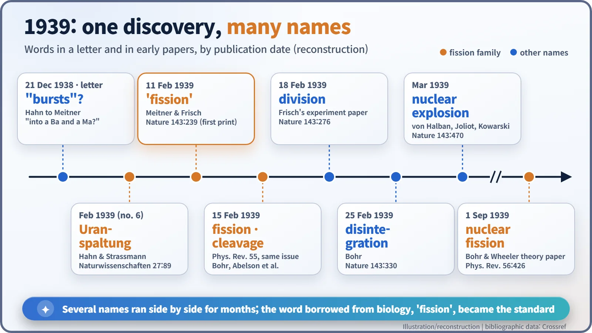
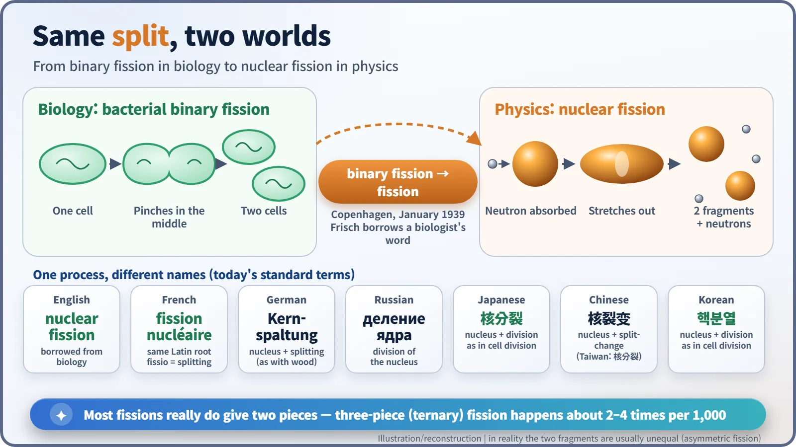

Nuclear History · 063
Borrowed from Bacteria — How "Fission" Got Its Name (1939)
The splitting of the uranium nucleus was discovered before it had a name, and the word that stuck came from a microbiology lab.
In January 1939 the splitting of the uranium nucleus had been discovered but not yet named. Otto Frisch asked an American biologist in Copenhagen what bacteria do when they divide in two, borrowed his answer, "binary fission", and the word "fission" first appeared in print in Nature on 11 February 1939. For a few months it competed with "explosion", "cleavage", "division" and "disintegration" before becoming the standard term.
What if it had been called an explosion?
Imagine if the physicists of 1939 had picked a different word. We might be getting our electricity from "nuclear explosion plants" and teaching students about "uranium burst products". That is less far-fetched than it sounds. In the spring of 1939, scientific journals described the same newly discovered process as an explosion, a cleavage, a disintegration and a division. The word that won, "fission", came not from a physics lab at all, but from a microbiology lab.
A process without a name
In December 1938, the Berlin chemists Otto Hahn and Fritz Strassmann found barium, a much lighter element, in uranium that had been bombarded with neutrons. Hahn wrote to his former colleague Lise Meitner, by then a refugee in Sweden, and asked hesitantly whether uranium could "burst" into barium and another element. Over the Christmas holidays, on a famous walk in the snow, Meitner and her nephew Otto Robert Frisch (1904–1979) worked out that the uranium nucleus had split in two. They understood what was happening. They just had no name for it. [2] [3]
A question in a Copenhagen basement
On 13 January 1939, back at Niels Bohr's institute in Copenhagen, Frisch ran a confirming experiment in a basement lab. He placed uranium next to an ionization chamber, exposed it to neutrons and watched the signal on an oscilloscope. Among the small pulses made by uranium's own alpha particles, huge spikes shot up: the tracks of the heavy fragments of split nuclei. [3]

One of the people who came down to watch was an American biologist, William A. Arnold (1904–2001). He was in Copenhagen on a Rockefeller fellowship, learning radioactive-tracer techniques from the Hungarian-born chemist George de Hevesy, and he was 34, the same age as Frisch. According to Arnold's later recollection, Frisch tracked him down later that day with a question: what do you call the process in which one bacterium divides into two? "Binary fission," Arnold answered. Could you call it just "fission"? Frisch asked. Arnold said you could. [3] [4]
A word of caution: this is a recollection told about half a century later and retold in Richard Rhodes's history of the atomic bomb, so the exact wording varies between sources. Even the day is uncertain. Some accounts place the conversation on the day of the first measurement, 13 January; Rhodes has Frisch repeating the experiment for visitors on 14 January.

A new word, still in quotation marks
On 16 January, Meitner and Frisch sent a short note to the British journal Nature. It appeared in the issue of 11 February 1939 under the title "Disintegration of Uranium by Neutrons: a New Type of Nuclear Reaction". In the text they wrote that "the whole 'fission' process can thus be described in an essentially classical way". The single quotation marks around 'fission' are a small sign of a brand-new term being tried out in print. [1]
What followed was a few weeks of vocabulary chaos. Frisch's own experimental paper, published a week later, spoke of the "Division of Heavy Nuclei". Bohr's note in Nature on 25 February used "disintegration". The 15 February issue of the American Physical Review carried short reports titled "Droplet Fission", "the Phenomenon of Nuclear Fission" (by Bohr) and "Cleavage of the Uranium Nucleus" side by side. In March, Frédéric Joliot's team in Paris titled their paper "Liberation of Neutrons in the Nuclear Explosion of Uranium". In Germany, Hahn and Strassmann's February paper used the word Uranspaltung ("uranium splitting") for the first time. By 1 September 1939, when Bohr and John Wheeler published their landmark theory paper, "The Mechanism of Nuclear Fission", the contest was effectively over. [5] [6] [7]

One split, many languages
"Fission" goes back to the Latin verb findere, "to split"; it is a sibling of "fissure", a crack. Biologists had been using it since the 19th century for cells and simple organisms that reproduce by splitting. French uses the same root: fission nucléaire. German took a homelier route with Kernspaltung, literally "nucleus splitting", the same verb you would use for splitting firewood. Russian says deleniye yadra, simply "division of the nucleus".
Korean and Japanese ended up closer to English than you might expect. Both use a word that means "nuclear division" (Japanese kaku-bunretsu, Korean haek-bunyeol), and the "division" part is exactly the word their biology textbooks use for cell division. Mainland Chinese uses a different standard term meaning roughly "nuclear split-change", while the "nuclear division" form is also used, for example in Taiwan. When these East Asian terms became fixed is something we could not confirm.

Why the name mattered
As names go, it was a good choice. "Explosion" suggests a nucleus blown to bits, but in reality nuclei almost always split into two large pieces. Three-piece ternary fission, in which a third light particle flies off, happens only about 2 to 4 times in every 1,000 fissions. The analogy with a dividing cell is not perfect, though: the two fragments are usually unequal in mass. Meitner and Frisch themselves were careful to write "two nuclei of roughly equal size". [1]
A good name also grows a family of words. Fission products, fission fragments and fissile material all branched from it, and the opposite process, the joining of light nuclei, got its natural partner: fusion. Unlike the vague newspaper phrase "splitting the atom", which had already been applied to very different experiments earlier in the 1930s, "fission" named exactly what splits and how. A young field gained a shared vocabulary in which to think, argue and design.
Arnold went on to spend his career as a biologist at Oak Ridge National Laboratory, studying photosynthesis. One of the most famous words in physics, in other words, was borrowed for a moment from a microbiology lab and never given back. [3]